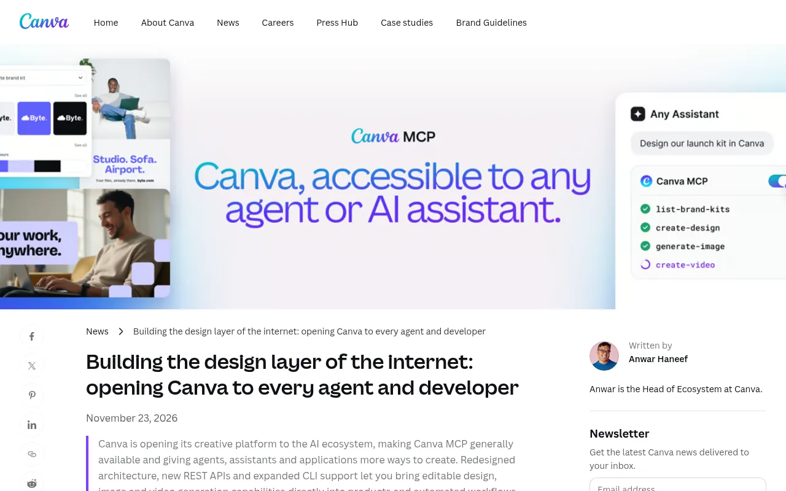
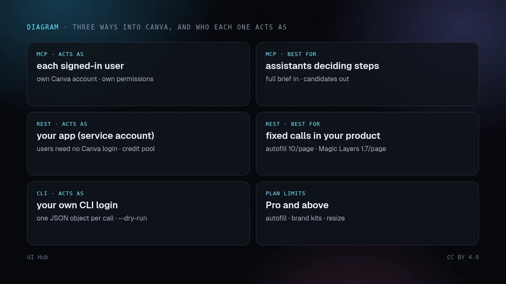
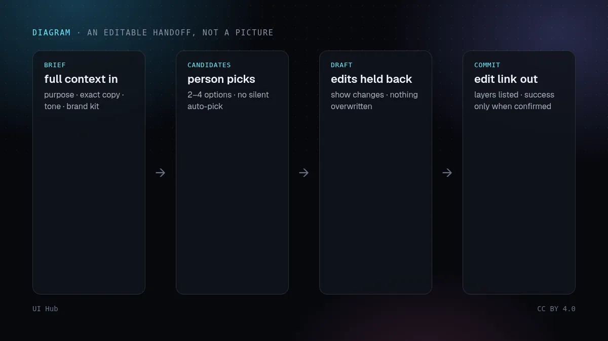

Canva 把 MCP 服务器正式开放了。它在 11 月 23 日的新闻稿里说，从此不再有等候名单：任何开发者都可以在 Canva 开发者平台创建应用、打开 MCP 开关然后接入。同一次发布还新增了用于设计生成、图像生成、去背景和 Magic Layers 的 REST API，功能更多的 Canva CLI，带 API 计费的服务账号，并开放了 Canva 自研的图像模型 Craft。第二天早上 The Next Web 做了报道，X 上也已经有人展示聊天助手拿回来的是分好图层的 Canva 文件，而不是图片。

2026 年 11 月 23 日 Canva 新闻稿《Building the design layer of the internet》，宣布 Canva MCP 正式可用，并新增 REST API、扩展 CLI 和服务账号 · 截图：Canva Newsroom（www.canva.com），2026-11-24 截取，版权归原站所有
Canva 公布的数据说明了它为什么这么积极：自 10 月以来，有近 50 万人通过 MCP 注册了 Canva；MCP 使用量从 9 月到 10 月增长了 93%；10 月输入 Canva CLI 的命令里有 72% 来自智能体。对做设计或做界面的人来说，有意思的不是增长，而是结果的形态。过去智能体交回来的是一张图，现在交回来的是一个你能打开、修改、评论和改尺寸的对象。
这次发布改变了什么
- 开放接入，按人登录。MCP 不再需要排队。但每个人仍然用自己的 Canva 账号登录，工具只能做这个账号有权限做的事。Canva 文档写明，MCP 不支持组织级或服务账号登录。
- 更少、更清楚的工具集。Canva 说它合并了功能重叠的工具，让智能体即使跑在较小的模型上，也能用更少的上下文选对工具。公开的工具列表包括生成设计候选、通过草稿事务编辑、改尺寸、自动填充模板、把扁平图片拆成图层、评论，以及导出 PDF、PNG、JPG、PPTX 和 MP4。
- 三种接入方式。MCP 让智能体自己决定步骤。REST API 在你自己的产品里提供固定、可预期的调用；配合服务账号，你的用户不需要 Canva 账号，由你按任务从积分池付费。CLI 让编程智能体一次调用一个聚焦的命令，每次调用在标准输出写一个 JSON 对象，适合批量和重复任务。
- 在对话里直接编辑。在 ChatGPT 和 Claude 里，Canva 连接器现在会打开一个侧边编辑面板，可以改文字、图片和版式，一键进入完整编辑器。视频生成也是同样的思路：生成之前你先确认一份带时间轴的制作计划，结果落在一条可编辑的时间线上。

对照网格：MCP 以每个登录用户的身份操作，由智能体选择步骤；REST 加服务账号以你的应用身份操作，用户不需要 Canva 账号，按任务从积分池计费；CLI 让编程智能体每条命令得到一个 JSON 结果，适合批量任务；方案限制意味着自动填充、品牌套件和改尺寸需要 Canva Pro 或更高 · 示意图：UI Hub 原创，CC BY 4.0
我们的看法：编辑链接才是交付物
我们之前写过，AI 设计正在从「生成」转向「编辑」。这次发布把这件事变成了一份界面约定。Canva 自己的开发者指南说得非常直接：任何工具碰过设计之后，都要返回编辑链接并告诉用户可以打开它；展示候选，而不是替用户自动选一个；只有在工具确认完成后才报告成功；缩略图和导出链接要当作短期有效。这些建议适用于所有在做 AI 功能的人，而不只是 Canva 的合作方。
同一天，Figma 也让它的智能体在 FigJam 和 Slides 的付费方案中正式可用，主打把白板整理成一份「你的团队和你的智能体都能据此行动」的 Spec。两家最大的设计工具在往同一个方向走：智能体的产出应该是一个活的文件，放在大家本来就在评审作品的工具里。一张扁平的图会让对话结束；一个带链接、分好图层的文件会开启下一轮修改。
有两点要小心。第一，Magic Layers 是补救工具，不是源格式。Canva 说它是为海报、横幅、社交图这类扁平、非照片的图形设计的，不支持 SVG 或 EPS，REST 版本仍是预览 API，公开集成不能用它上线。如果你手里已经有分层的源文件，就用源文件，别先导出成 PNG 再让模型猜回图层。第二，动手之前先决定账号归谁。MCP 以每个登录用户的身份操作，REST 服务账号以你的应用身份操作，这决定了谁能看到文件、谁付费、有哪些方案功能：自动填充、品牌套件和改尺寸都需要 Canva Pro 或更高方案。
怎样选择接入方式
- 你的用户在和助手对话，而且已经有 Canva：用 MCP。把完整需求发过去，不要只发摘要，让用户在候选之间挑。
- 你的产品为可能没有 Canva 账号的用户生成素材：用 REST 加服务账号。按 Canva 的积分表给每个任务做预算，比如自动填充每页 10 积分，CRAFT-1 2K 每张 3 积分，Magic Layers 每页 1.7 积分。失败的任务会退回积分。
- 编程智能体跑一批任务：用 CLI。先跑
--dry-run，把 JSON 输出接给 jq，并保存返回的设计 ID。
- 有人发给你一张拍平的海报：先拆成图层，在信任结果之前逐个检查文字框。

流程：智能体发出完整需求，由人从几个候选中挑一个，修改留在草稿事务里直到有人同意，最后提交并返回编辑链接和图层清单 · 示意图：UI Hub 原创，CC BY 4.0可编辑交接检查清单
- 每一个碰过设计的步骤，都返回了编辑链接和一句简短明确的行动提示吗？
- 是把几个候选展示给人来挑，而不是由智能体悄悄选定吗？
- 只有在工具确认成功后才显示「完成」，长任务期间有进度提示吗？
- 修改先留在草稿里，等有人确认再提交吗？提交失败时，是重新开一个草稿，而不是反复重试过期的那个吗？
- 任何破坏性操作，比如原地重新填充模板，都要先得到明确同意吗？Canva 提醒原地自动填充无法撤销。
- 拆分图层之后：标题是用品牌字体的可编辑文字吗？背景是单独一层吗？Logo 还清晰吗？
- 预览和导出链接没有存进数据库，也没有发进共享消息吗？
- 结果用的是品牌套件，而不是模型猜的颜色吗？品牌套件所需的方案等级确实已经开通了吗？
# 把这段贴给接好了设计工具（Canva MCP 或类似工具）的智能体
为 <受众> 制作 <素材>，格式和尺寸为 <格式与尺寸>。
需求：用途、关键文案（准确文字）、语气、品牌套件名称、要避免的东西。
规则：
- 返回 2–4 个带缩略图的候选，等我挑一个。
- 使用可编辑文字以及我的品牌套件字体和颜色，不要把文字烧进图片。
- 修改先放在草稿里，给我看改了什么，我说可以再提交。
- 永远不要原地覆盖已有设计。
- 完成后给我编辑链接，并列出图层：文字、图片、背景。
- 如果你手里只有一张扁平图片，先拆成图层，并告诉我
哪些部分没能还原。
UI Hub 相关阅读：Canva Brush：AI 设计从生成走向编辑、给智能体保持分层文件整洁，以及让 AI 设计作品可以带走。